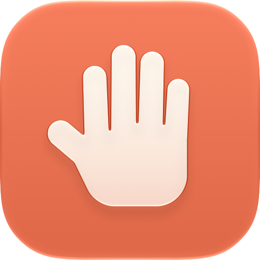
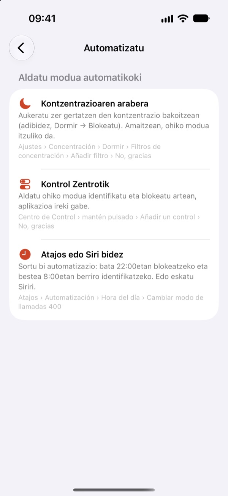

No, gracias
Identifikatu edo blokeatu iPhonean 400 aurrezenbakia duten dei komertzialak.

iPhonerako. Doan, iragarkirik gabe, konturik gabe eta daturik bildu gabe.



Identifikatu
Deiak jo egiten du, baina «Komertziala (400)» ikusiko duzu pantailan, eta zuk erabakiko duzu erantzun ala ez.
Blokeatu
400 deiek ez dute jotzen, eta ez dira agertzen. Deitzen duenak ez daki.
Zure kontzentrazioarekin
Blokeatu lotan edo lanean zauden bitartean, eta egunaren gainerakoan identifikatu, bere kabuz.
Benetan pribatua
Dena zure iPhonean gertatzen da. Ez ditu ikusten zure deiak, kontaktuak edo historia.
Zergatik 400?
2026ko urriaren 17tik aurrera, Espainiako dei komertzialak 400ekin hasten diren zenbakietatik egin behar dira. Horrela, begirada batean ezagutu daitezke, eta «No, gracias»-k zure ordez ezagutzen ditu. Zer dio arauak · Nola blokeatu 400 deiak iPhonean.
Nola funtzionatzen du
- Instalatu aplikazioa eta ireki.
- Aktibatu hemen: Ajustes › Apps › Teléfono › Bloqueo e identificación de llamadas.
- Aukeratu identifikatu edo blokeatu. Nahi duzunean alda dezakezu aplikaziotik, Kontrol Zentrotik, Siritik edo Atajos aplikaziotik.
Doan, eta hala jarraituko du
Ez du iragarkirik, ordainpeko bertsiorik edo harpidetzarik. Erabilgarria bazaizu, aplikaziotik kafe bat gonbida diezaiokezu garatzaileari. Ez du ezer desblokeatzen: eskerrak emateko modu bat besterik ez da.
iOSek ez du euskarazko interfazerik; horregatik, Ajustes-eko bideak gaztelaniaz daude, iPhonean ikusiko dituzun bezala.